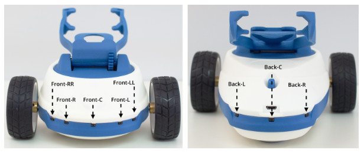

Utils¶
Classes¶
- class Acceleration(x, y, z)[source]¶
Bases:
objectRepresents the acceleration of the smartphone.
- Attributes:
x (float): acceleration on the X axis (m/s^2).
y (float): acceleration on the Y axis (m/s^2).
z (float): acceleration on the Z axis (m/s^2).
- class Blob(color, posx, posy, size, frame_timestamp, status_timestamp)[source]¶
Bases:
objectRepresents a blob detected by Robobo.
- Attributes:
color (string): The color of the blob.
posx (int): The x coordinate of the tap [0..100]. See: Screen coordinates.
posy (int): The y coordinate of the tap [0..100]. See: Screen coordinates.
size (int): The area of the blob measured in pixels.
frame_timestamp (long): The time when the frame started processing.
status_timestamp (long): The time when the status was sent.
- class DetectedObject(x, y, width, height, confidence, label, statusTimestamp)[source]¶
Bases:
objectRepresents an object detected by Robobo.
- Attributes:
x (int): The x coordinate of the center of the bounding box, measured in pixels from the left side of the screen. Takes positive values.
y (int): The y coordinate of the center of the bounding box, measured in pixels from the upper side of the screen. Takes positive values.
width (int): The width of the bounding box, measured in pixels. Takes positive values.
height (int): The height of the bounding box, measured in pixels. Takes positive values.
label (string): The class of the identified object.
confidence (float): The confidence for the class of the object. Takes values between 0.5 and 1.
- class Face(posx, posy, distance)[source]¶
Bases:
objectRepresents a face detected by Robobo using the front camera of the smartphone.
- Attributes:
posx (int): The x coordinate of the tap [0..100]. See: Screen coordinates.
posy (int): The y coordinate of the tap [0..100]. See: Screen coordinates.
distance (int): The rounded distance between the eyes of the person, measured in pixels. The values obtained when the person is near the camera are higher than those obtained when the person is far. Takes positive values.
- class LanePro(l1, l2, l3, r1, r2, r3, minv, id)[source]¶
Bases:
objectRepresents a lane detected by Robobo, formed by two second degree polynomials.
- Attributes:
coeffs1 (dict): Dictionary with ‘a’,’b’ and ‘c’ (ax^2 + bx +c) coefficients of the left line.
coeffs2 (dict): Dictionary with ‘a’,’b’ and ‘c’ (ax^2 + bx +c) coefficients of the right line.
minv (array): Transformation matrix to get to the original perspective.
id (int): Sequence frame number. Since the camera starts, each frame has a number to be identified. Takes positive values.
- class LaneBasic(l1, l2, r1, r2, id)[source]¶
Bases:
objectRepresents a lane detected by Robobo, formed by two straight lines.
- Attributes:
coeffs1 (dict): Dictionary with ‘a’ and ‘b’ (ax + b) coefficients of the left line.
coeffs2 (dict): Dictionary with ‘a’ and ‘b’ (ax + b) coefficients of the right line.
id (int): Sequence frame number. Since the camera starts, each frame has a number to be identified. Takes positive values.
- class Lines(lines, id)[source]¶
Bases:
objectRepresents a set of straight lines detected by Robobo in a frame.
- Attributes:
lines (array): Array with n rows and 4 columns, being n the number of lines detected. Each row has the values ‘x1’, ‘y1’, ‘x2’, ‘y2’, representing the x and y coordinates of the points 1 and 2 that form the detected line. These coordinates takes positive values.
id (int): Sequence frame number. Since the camera starts, each frame has a number to be identified. Takes positive values.
- class Note(name, duration)[source]¶
Bases:
object- Represents a note detected by Robobo:
Name: (string) The musical note in text format, according to the English nomenclature, that is:
DO
DO#
RE
RE#
MI
FA
FA#
SOL
SOL#
LA
LA#
SI
C
Cs
D
Ds
E
F
Fs
G
Gs
A
As
B
Duration: (int) The note’s duration in milliseconds.
- class Orientation(yaw, pitch, roll)[source]¶
Bases:
objectRepresents the orientation of the Smartphone.
- Attributes:
yaw (float): Rotation in degrees around the Z axis. Takes values between -180 and 180. The yaw angle turn is achieved by turning the base with the wheel motors and the PAN motor.
pitch (float): Rotation in degrees around the Y axis. Takes values between -180 and 180. The pitch angle turn is achieved by using the TILT motor or moving the robot through a frontally inclined plane.
roll (float): Rotation in degrees around the X axis. Takes values between -180 and 180. The turn in the roll angle cannot be achieved by Robobo, but if the surface on which it moves has a lateral inclination, it will change.

- class QRCode(x, y, dist, p1x, p1y, p2x, p2y, p3x, p3y, id, statusTimestamp)[source]¶
Bases:
objectRepresents a QRCode detected by Robobo. Definido por tres puntos. Valor cualitativo que sirve para saber si te acercas o te alejas, no la distancia exacta.
Attributes:
x (float): The x coordinate of the center of the QR, measured in pixels from the left side of the screen. Takes positive values.
y (float): The y coordinate of the center of the QR, measured in pixels from the upper side of the screen. Takes positive values.
distance (int): Approximated distance between Robobo and the QRCode, measured in meters.
p1 (dict): Dictionary with ‘x’ and ‘y’ coordinates of the first point of interest. These coordinates are measured in pixels from the left and upper sides of the screen, and take positive values.
p2 (dict): Dictionary with ‘x’ and ‘y’ coordinates of the second point of interest. These coordinates are measured in pixels from the left and upper sides of the screen, and take positive values.
p3 (dict): Dictionary with ‘x’ and ‘y’ coordinates of the third point of interest. These coordinates are measured in pixels from the left and upper sides of the screen, and take positive values.
id (int): QRCode identifier.
timestamp (int): timestamp of the message

- class Tag(cor1x, cor1y, cor2x, cor2y, cor3x, cor3y, cor4x, cor4y, rvec_0, rvec_1, rvec_2, tvec_0, tvec_1, tvec_2, id, statusTimestamp)[source]¶
Bases:
objectRepresents an ArUco Tag detected by Robobo, and defined by four corners read clockwise.
- Attributes:
cor1 (dict): Dictionary with ‘x’ and ‘y’ coordinates of the first corner.
cor2 (dict): Dictionary with ‘x’ and ‘y’ coordinates of the second corner.
cor3 (dict): Dictionary with ‘x’ and ‘y’ coordinates of the third corner.
cor4 (dict): Dictionary with ‘x’ and ‘y’ coordinates of the fourth corner.
tvecs (dict): Dictionary with the ‘x’, ‘y’ and ‘z’ components of the translation vector.
rvecs (dict): Dictionary with the ‘x’, ‘y’ and ‘z’ components of the rotation vector.
id (int): The ArUco identifier.
- class Tap(x, y)[source]¶
Bases:
objectRepresents a tap detected on the smartphone screen.
- Attributes:
x (int): The x coordinate of the tap [0..100]. See: Screen coordinates.
y (int): The y coordinate of the tap [0..100]. See: Screen coordinates.
zone (string): Returns the area of the smartphone screen. Takes one of the following values: ‘forehead’, ‘eye’, ‘right’, ‘left’, ‘mouth’ or ‘chin’.

Enumerations¶
- class BlobColor(value, names=None, *, module=None, qualname=None, type=None, start=1, boundary=None)[source]¶
Bases:
EnumThis enumeration represents the list of colors Robobo can detect
- RED = 'red'¶
- BLUE = 'blue'¶
- GREEN = 'green'¶
- CUSTOM = 'custom'¶
- class Color(value, names=None, *, module=None, qualname=None, type=None, start=1, boundary=None)[source]¶
Bases:
EnumThis enumeration represents the list of colors Robobo’s LEDs can show.
- OFF = 'off'¶
- WHITE = 'white'¶
- RED = 'red'¶
- BLUE = 'blue'¶
- CYAN = 'cyan'¶
- MAGENTA = 'magenta'¶
- YELLOW = 'yellow'¶
- GREEN = 'green'¶
- ORANGE = 'orange'¶
- class Emotions(value, names=None, *, module=None, qualname=None, type=None, start=1, boundary=None)[source]¶
Bases:
EnumRepresents the list of emotions Robobo’s face can show.

- HAPPY = 'happy'¶
- LAUGHING = 'laughing'¶
- SURPRISED = 'surprised'¶
- SAD = 'sad'¶
- ANGRY = 'angry'¶
- NORMAL = 'normal'¶
- SLEEPING = 'sleeping'¶
- TIRED = 'tired'¶
- AFRAID = 'afraid'¶
- class IR(value, names=None, *, module=None, qualname=None, type=None, start=1, boundary=None)[source]¶
Bases:
EnumThis enumeration represents the list of Robobo base’s IR
- BackR = 'Back-R'¶
- BackC = 'Back-C'¶
- FrontR = 'Front-R'¶
- FrontRR = 'Front-RR'¶
- FrontC = 'Front-C'¶
- FrontL = 'Front-L'¶
- FrontLL = 'Front-LL'¶
- BackL = 'Back-L'¶
- class LED(value, names=None, *, module=None, qualname=None, type=None, start=1, boundary=None)[source]¶
Bases:
EnumThis enumeration represents the list of Robobo base’s LEDs

- BackR = 'Back-R'¶
- FrontR = 'Front-R'¶
- FrontRE = 'Front-RR'¶
- FrontC = 'Front-C'¶
- FrontL = 'Front-L'¶
- FrontLL = 'Front-LL'¶
- BackL = 'Back-L'¶
- All = 'all'¶
- class Sounds(value, names=None, *, module=None, qualname=None, type=None, start=1, boundary=None)[source]¶
Bases:
EnumThis enumeration lists the emotion sound Robobo can play.
- PURR = 'purr'¶
- MOAN = 'moan'¶
- ANGRY = 'angry'¶
- APPROVE = 'approve'¶
- DISAPPROVE = 'disapprove'¶
- DISCOMFORT = 'discomfort'¶
- DOUBTFUL = 'doubtful'¶
- LAUGH = 'laugh'¶
- LIKES = 'likes'¶
- MUMBLE = 'mumble'¶
- OUCH = 'ouch'¶
- THINKING = 'thinking'¶
- VARIOUS = 'various'¶
- class StatusFrequency(value, names=None, *, module=None, qualname=None, type=None, start=1, boundary=None)[source]¶
Bases:
EnumThis enumeration lists the possible values for setting the frequency of the status messages coming from the robot.
- Low = 'LOW'¶
- Normal = 'NORMAL'¶
- High = 'HIGH'¶
- Max = 'MAX'¶